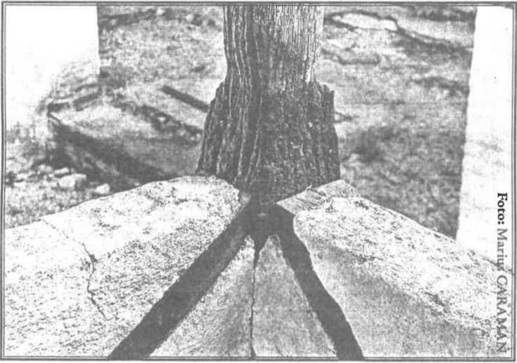

Despre vorba Apostolului:
„Femeia este legată prin lege atîta vreme cît trăiește bărbatul ei. Iar dacă bărbatul ei va muri, este liberă să se mărite cu cine vrea, numai întru Domnul. Însă mai fericită ar fi dacă ar rămîne cum este.”
În altă zi, Fericitul Pavel ne-a așezat legea despre căsătorie și drepturile ei, scriind și zicînd așa către Corinteni: Iar pentru care mi-ați scris, bine este omului să nu se atingă de femeie. Iar din pricina prea-curviei, fiecare să-și aibă femeia sa, și fiecare să-și aibă bărbatul său (1 Corinteni 7:1, 2). De aceea am spus și eu tot ce era de trebuință pentru înțelegerea acestor cuvinte. Dar este nevoie să vorbesc cu voi iarăși despre același lucru, fiindcă și astăzi, același Sfînt Apostol Pavel pomenește de dînsul. Și l-ați auzit pe el strigînd și zicînd: Femeia este legată prin lege atîta vreme cît trăiește bărbatul ei. Iar dacă bărbatul ei va muri, este liberă să se mărite cu cine vrea, numai întru Domnul. Dar mai fericită este de va rămîne așa, după părerea mea. Și socotesc că și eu am Duhul lui Dumnezeu (Corinteni 7:39,40).
Deci să urmăm lui și astăzi și să vorbim împreună despre această învățătură; căci, urmînd lui Pavel, prin el vom urma în totul și lui Hristos, fiindcă și el nu sie-și, ci Aceluia urmînd, a scris toate. Și nu este lucru neînsemnat ca o căsătorie să fie bine înființată, altminteri este izvor de nenumărate rele pentru cei ce nu se folosesc de ea cum trebuie. După cum femeia este un ajutor, tot așa, adesea, se face și vrăjmaș. Și, după cum căsătoria este un liman, tot așa poate aduce și naufragiul, nu prin firea sa, ci prin sufletul acelora care se folosesc rău de ea. Acela care păzește legile hotărîte ale ei găsește casa și femeia lui ca o mîngîere și liberare de toate necazurile care i se întîmplă, fie în piață, fie oriunde; iar acela care ia lucrul cu nesocotință și fără judecată, chiar dacă se bucură de multă liniște în afară, intrînd în casă, vede numai stînci și pietre. Trebuie deci, pentru că este vorba de treburi așa de însemnate, să dăm mare luare aminte acestor cuvinte: cel care își ia femeie trebuie să facă acest lucru după legiuirea lui Pavel sau, la drept vorbind, după legiuirea lui Hristos.
Știu negreșit că multora cuvîntul li se va părea nou și neașteptat, și de aceea nu voi tăcea, ci mai întîi vă voi citi legea, și apoi voi încerca să înlătur contrazicerea ce pare că este aici. Care este legea pe care ne-a dat-o Pavel? Femeia este legată de lege, deci, cît îi trăiește bărbatul, nu trebuie să se despartă și să-și ia alt soț, încheind o a doua căsătorie. Și bagă de seamă că folosește numai cuvinte deslușite, cu toată îngrijirea. Nu zice: Să trăiască la un loc cu bărbatul cît timp trăiește aceasta, ci: Femeia este legată de lege cît timp trăiește bărbatul ei; încît - chiar dacă i se dă carte de despărțire, chiar dacă părăsește casa, chiar dacă se duce la altul - este legată prin lege, și una ca aceasta este prea-curvă.
Așadar - dacă bărbatul ar voi să-și depărteze nevasta, sau femeia să-și lase bărbatul - să-și amintească această vorbă și să se gîndească că Pavel este de față și o urmărește, zicîndu-i cu tărie: Femeia este legată de lege. Căci, așa cum robii fugiți tîrăsc după ei lanțul, chiar cînd au părăsit casa stăpînului, tot așa și femeile, cînd părăsesc pe bărbați, sînt încătușate de lege, care le urmărește și le învinuiește de prea-curvie, învinovățind și pe cel ce a luat-o, cu vorbele: Ce ați făcut este prea-curvie, căci femeia este legată prin lege cîtă vreme trăiește bărbatul ei. Și: Cel ce va lua pe cea lăsată săvîrșește prea-curvie (Matei 5:32).
Cînd însă are voie să se căsătorească a doua oară? Cînd i-a murit bărbatul, atunci este liberă din lanț. Arătînd aceasta, nu a adăugat: „Dacă a murit bărbatul ei, este liberă să se căsătorească cu cine vrea”, ci dacă a adormit, avînd în gînd nu numai a o mîngîia pe cea văduvă, ci și a o face să nu mai ia un al doilea soț. „Nu a murit soțul tău, ci doarme!” Cine nu așteaptă pe un om adormit? De aceea zice: Dacă a adormit, slobodă este să se căsătorească cu cine vrea. Nu zice să se mărite, ca să nu pară că o silește. Nici nu o împiedică, dacă vrea, să se căsătorească a doua oară; nici nu o silește, dacă nu vrea, ci îi citește Legea, zicînd: Slobodă este să se căsătorească cu cine vrea. Și, zicînd că este slobodă după moartea bărbatului, a arătat că, atîta vreme cît trăia acela, era roabă și supusă legii și, chiar dacă ar fi primit mii de cărți de despărțire, s-ar fi făcut vinovată de prea-curvie. Robilor le este îngăduit să-și părăsească stăpînii în viață, dar femeii nu-i este îngăduit să-și lase bărbatul cîtă vreme trăiește el, fiindcă această poftă este prea-curvie. Să nu-mi citești legile făcute de legiuitorii lumii acesteia, care învață să dai carte de despărțire și să te desfaci de femeie, căci nu după acestea are să te judece Dumnezeu în acea zi, ci după acelea pe care El Însuși le-a pus. Nici chiar legile din afară [lumești] n-au hotărît aceasta cu desăvîrșire și ele însele pedepsesc fapta, încît și de aici se vede că înfierează acest păcat. Ele pedepsesc cu pierderea de avere pe cel ce a fost pricina despărțirii. Și, negreșit, cînd legiuiesc așa, nu îndeamnă să faci lucrul acesta.
Dar Moisi? Și el a hotărît aceasta pentru aceeași pricină, [dar] tu ascultă-L pe Hristos cum zice: De nu va prisosi dreptatea voastră mai mult decît a cărturarilor și fariseilor, nu veți intra întru Împărăția cerurilor (Matei 5:20; și, mai departe: Tot cel ce-și va lăsa femeia sa, afară de pricină de prea-curvie, o face să săvîrșească prea-curvie; și cine va lua pe cea lăsată săvîrșește prea-curvie (Matei 5:32). De aceea a venit unul-născut Fiul lui Dumnezeu, de aceea a luat chip de rob, de aceea și-a vărsat scumpul sînge, a stricat moartea, a șters păcatul, a dat harul prea îmbelșugat al Duhului: ca să te aducă pe tine spre o înțelepciune mai mare!
Pe de altă parte, nici Moisi n-a statornicit despărțirea cu desăvîrșire, dar a fost silit să ia în seamă slăbiciunea celor pentru care legiuia, pentru că erau aplecați spre omoruri, și umpleau casele cu sîngele rudelor lor și nu cruțau nici pe ai lor, nici pe străini. Și, ca să nu-și sugrume femeile în ascuns, cînd nu le mai iubeau, de aceea a orînduit să le lase, ca să înlăture o nelegiuire mai mare: ușurința omorurilor. Cum că erau vărsători de sînge, ascultă chiar pe Prooroci, care spun: Cei ce zidiți Sionul cu sînge, și Ierusalimul cu strîmbătăți (Miheia 3:10) Și iarăși: Sîngiuri cu sîngiuri se amestecă (Osea 4:2) Și iarăși: Mîinile voastre sînt pline de sînge (Isaia 1:15). Și că erau sîngeroși nu numai față de străini, dar și de ai lor, și aceasta o arată Proorocul, zicînd: Și au jertfit pe fiii lor și pe fetele lor diavolilor (Psalm 105:37). Cei care nu cruțau pe copii lor nu ar fi cruțat nici pe femeile lor. Ca să nu facă aceasta a legiuit Moisi așa.
De aceea, și Hristos - cînd l-au întrebat Iudeii, zicînd: Pentru ce dar Moisi a poruncit să i se dea carte de despărțire, și să o lase pe ea? (Matei 19:7) - arătînd că acela a făcut lege care nu este potrivnică cu a Sa, a zis: Pentru învîrtoșarea inimii voastre v-a dat voie Moisi să lăsați pe femeile voastre, dar dintru început nu a fost așa (Matei 19:8). Cel care i-a făcut la început, bărbat și femeie i-a făcut (Matei 19:4). Vrea să spună că, dacă lucrul acesta ar fi fost bun, Dumnezeu n-ar fi făcut numai un bărbat și o femeie; ci, făcînd pe Adam singur, i-ar fi făcut două femei, ca, dacă ar fi voit să lase pe una, să o ia în schimb pe cealaltă. Dar chiar prin chipul în care a fost făcută lumea a adus legea pe care eu o scriu acum. Și care este aceea? Femeia pe care a luat-o fiecare de la început, pe aceea să o țină toată viața. Această lege e mai veche decît aceea despre despărțire, și anume cu cît este de la Adam pînă la Moisi.
Este însă de preț să ascultați și acea lege pe care a pus-o Moisi în această privință: De își va lua cineva femeie și va locui cu ea, dar ea nu va afla har înaintea lui, pentru că a aflat întru ea lucru urît, îi va scrie ei carte de despărțire, i-o va da la mînă și o va slobozi pe ea din casa lui (Deuteronom 24:1). Vezi, nu zice: „să-i scrie” și: „să-i dea”, dar ce zice? Și va scrie carte de despărțire și i-o va da la mînă. Multă deosebire e între aceasta și aceea: căci, cînd se zice: „să-i scrie” și: „să-i dea”, este vorba de hotărîre și poruncă; iar cînd se zice: Și va scrie carte de despărțire și i-o va da în mînă, este vestirea unui fapt, iar nu aducerea unei legi hotărîte. Dacă cuiva - zice el - îi greșește femeia sa, și o trimite pe ea din casa sa, iar ea, gonită fiind, se face nevasta altui bărbat; și dacă chiar bărbatul din urmă o va urî, și îi va scrie carte de despărțire și i-o va da la mînă, și o va slobozi din casa lui; sau va muri acest din urmă bărbat al ei care a luat-o pe ea ca femeie, bărbatul ei cel dintîi care a alungat-o nu va putea să o întoarcă pe ea și să o ia ca soția a lui (Deuteronom 24:2-4). Apoi - arătînd că nu laudă fapta, nici nu o socotește drept căsătorie, dar că s-a coborît pentru slăbiciunea lor - după ce zice: Nu va putea bărbatul cel dintîi, care a alungat-o, să o întoarcă și să o ia de soție, a adăugat: ...după ce a fost pîngărită (Deuteronom 24:4), lămurind prin acest chip de vorbire că a doua căsătorie, făcută cînd trăia primul bărbat, este mai curînd o pată necurată decît o căsătorie. Iată de ce nu a zis: „după ce s-a măritat iarăși”. Vezi că vorbește la fel cu Hristos? Apoi a spus și pricina: ...pentru că aceasta este urîciune înaintea lui Dumnezeu (Deuteronom 24:4).
Deci, cu Moisi, așa stă lucrul. Însă Proorocul Maleahi arată aceasta mult mai lămurit chiar decît Moisi – ori, mai bine, nu Maleahi, ci Dumnezeu prin Maleahi - zicînd așa: (Dumnezeu) nu mai caută la prinoase și nu mai binevoiește să le primească din mîinile voastre (Maleahi 2:13). Apoi, [după întrebarea „de ce?”], zice: Din pricină că Domnul a fost martor între tine și femeia tinereților tale, față de care tu ai fost viclean (Maleahi 2:14). Apoi, ca să arate mărimea răului și cît nu merită iertare cel ce a făcut aceasta, sporește la urmă învinovățirea, zicînd așa: [Aceasta era] tovarășa ta și femeia legămîntului tău (Maleahi 2:14). Oare nu i-a făcut El ca să fie o singură făptură cu trup și suflet? (Maleahi 2:15). Privește cîte drepturi îi pune: mai întîi, vîrsta: „femeia tinereții tale”; apoi, apropierea: „tovarășa ta”; apoi, chipul zidirii: o singură făptură cu trup și suflet. La toate astea, adaugă aceea ce e mai mare decît toate, anume vrednicia ziditorului, căci aceasta însemnează zicerea „oare nu i-a făcut El?”. Vrea să spună că nu poți spune că pe tine te-a făcut Dumnezeu, iar pe ea nu Dumnezeu, ci vreun altul mai prejos decît El. Unul și Același v-a făcut pe amîndoi așa cum sunteți; așa că, dacă nu pentru altceva, cel puțin pentru aceasta fiind rușinat, păstrează dragostea către ea. Căci - dacă adesea aceasta a fost pricină de iubire între robii certați, faptul că amîndoi slujesc unuia și aceluiași stăpîn - cu atît mai mult trebuie să se facă între noi, cînd amîndoi avem același Ziditor și același Stăpîn. Ai văzut cum și în Vechiul Testament se găsesc oarecum începuturile învățăturii celei noi? Căci - după ce multă vreme au trăit sub lege, fiind nevoie să înainteze către învățături mai desăvîrșite, pe cînd legea lor se apropia de sfîrșit - atunci Proorocul, în vremuri potrivite, îi povățuiește spre această învățătură. Să ne supunem deci acestei legi bune, și să ne scăpăm pe noi de toată rușinea și nici să ne alungăm femeile, nici să primim altele, depărtate de alții. Cu ce față ai să privești tu pe bărbatul acelei femei? Cu ce ochi ai să privești pe prietenii și slugile acelui om? Căci, dacă acela care a luat pe soția unuia care a murit suferă și este mîhnit numai pentru că a văzut chipul celui răposat, ce fel de viață va duce cineva văzînd în viață pe bărbatul aceleia cu care trăiește? Cum va intra în casă? Cu ce simțire, cu ce ochi va privi pe femeia aceluia, care acum este a sa?
Mai curînd nu o vom socoti nici ca soția unuia, nici ca a altuia: o femeie destrăbălată nu este femeia nimănui. Ea a călcat în picioare învoiala cu acela și a venit la tine nu după o lege poruncitoare. Ce mare nebunie ai face dacă ai aduce în casă un lucru plin de atîtea rele! Este oare lipsă de femei? De ce să alergăm la cele oprite, cînd sînt multe pe care am putea să le luăm după legi cuviincioase și cu cugetul curat? De ce să ne stricăm casele, de ce să aducem lupte obștești, făcîndu-ne peste tot vrăjmași gata să ne învinuiască cu nenumărate învinuiri? De ce să ne necinstim viața și, ceea ce este mai grozav decît toate, de ce să ne gătim în ziua judecății pedeapsă neînlăturată? Ce vom răspunde Celui ce are să ne judece atunci cînd, punînd legea la mijloc și citind, va zice: „Ți-am poruncit să nu iei o femeie lăsată de altul, spunîndu-ți că fapta este prea-curvie (vezi Matei 5:53). Cum ai îndrăznit să faci o căsătorie oprită de lege?” Ce vom zice și ce vom răspunde? Căci acolo nu ești slobod să învîrtești cum vrei legile, cum se întîmplă cu cele hotărîte de veacul acesta, ci ești silit ca, tăcînd și în lanțuri, să te vîri în focul gheenei, cu femeile cele stricate și cu acei care n-au cinstit drepturile căsătoriei altora. Căci și acela care și-a depărtat femeia fără pricină de prea-curvie, și acela care s-a căsătorit cu una depărtată, trăind bărbatul ei, vor lua pedeapsa cu cea alungată. De aceea vă înștiințez, vă rog și vă sfătuiesc: Bărbați, nu goniți pe femeile voastre! Femei, nu lăsați pe bărbații voștri, ci ascultați pe Sfîntul Apostol Pavel cum zice: Femeia, cît timp trăiește bărbatul ei, este legată (de dînsul); iar dacă va muri bărbatul, este de sine stăpînă ca să se mărite cu cine voiește, numai în Domnul (să se mărite). (1 Corinteni 7:39).
Ce îndurare vor avea aceia care - după ce Pavel îngăduie și a doua căsătorie după moartea bărbatului, și lasă atîta libertate – îndrăznesc să facă de acestea înainte de sfîrșitul primului bărbat? Ce apărare mai rămîne celor care-și iau alți bărbați, trăindu-le bărbații, sau acelora care, avînd femeia lor acasă, se duc la femeile destrăbălate? După cum o femeie cu bărbat, dacă se dă unuia care n-are femeie - fie acesta rob, fie liber - este vinovată de prea-curvie, tot așa și bărbatul cu femeie, dacă greșește fie cu o femeie publică, fie cu o altă femeie care n-are bărbat, este vinovat de prea-curvie. Să fugim deci și de acest chip de prea-curvie! Căci ce vom putea spune? Cum vom îndrăzni să tăgăduim acestea? Ce apărare vom aduce? Pofta trupului? Dar femeia de care am avut parte este de față și ne lipsește de această apărare. De aceea sînt așezate căsătoriile, ca să nu cădem în prea-curvie. Și încă nu numai femeia, dar și alții mulți, care au aceeași fire ca și a noastră, ne lipsesc de această apărare. Căci, cînd tovarășul tău de robie - avînd același trup, fiind stăpînit de aceeași poftă, ațîțat de aceeași nevoie - nu vede altă femeie, ci rămîne mulțumit numai cu a sa, ce fel de apărare vei avea tu, punînd înainte pofta? Și de ce să vorbesc de cei ce au femei? Gîndește-te la cei ce trăiesc toată viața în feciorie, care nu s-au căsătorit niciodată și s-au arătat cu totul curați. Cînd alții sînt curați fără să se căsătorească, ce fel de iertare mai ceri tu, care te întinezi și după ce te-ai căsătorit? Să audă aceste vorbe și bărbații, și femeile, și văduvele, și căsătoritele, căci către toate vorbește Pavel, și legea aceea zice: Femeia, cît timp este în viață bărbatul ei, este legată (de dînsul); iar dacă va fi murit bărbatul, este de sine stăpînă ca să se mărite cu cine voiește, numai în Domnul (1 Corinteni 7:39). Soțiile, fecioarele, văduvele, cele căsătorite a doua oară - într-un cuvînt, toate femeile - pot trage folos din această vorbă. Soția nu va vrea să fie a altuia, auzind că este legată de bărbatul ei cît trăiește acesta. Aceea care, după ce și-a pierdut bărbatul, ar voi să lege a doua căsătorie să nu facă aceasta ușuratic și fără multă gîndire, ci după legile așezate de Pavel, care zice: Liberă este să se căsătorească, dar numai în Domnul, adică cu înfrînare și curăție. Iar dacă voiește să țină legătura încheiată cu cel mort, va asculta ce cununi i se păstrează și va cîștiga o mare bucurie, căci: mai fericită este dacă rămîne astfel (1 Corinteni 7:40).

Vezi cît de folositor este acest cuvînt, care se coboară pentru slăbiciunea unei femei și nu lipsește pe altele de laudele meritate? Ceea ce a făcut pentru căsătorie și pentru feciorie, aceasta a făcut și pentru prima și a doua căsătorie. Căci, după cum n-a oprit căsătoria, ca să nu îngreuneze pe cei prea slabi, nici n-a silit, ca să nu lipsească de cununile hotărîte, pe aceia care voiesc să-și păstreze fecioria. A arătat că bună este căsătoria, dar a învederat că mai bună este fecioria. Tot așa și aici: iarăși ne pune trepte, arătînd că văduvia este mare lucru și foarte înalt, iar a doua căsătorie mai prejos; pregătește deci pe cei puternici și pe cei care vor să intre în luptă, iar pe cei slabi nu-i lasă să cadă.
Iar cînd a zis: Mai fericită este dacă va rămîne așa (1 Corinteni 7:40), ca să nu crezi că legea este omenească pentru că spune: ...după sfatul meu, a adăugat: Și socotesc că și eu am Duhul lui Dumnezeu. Așa încît nu vei putea zice că este gînd omenesc, ci descoperire a harului Sfîntului Duh și lege dumnezeiască. Să nu socotim deci că vorbește Pavel: Duhul Sfînt ne-a așezat nouă această lege. Iar cînd zice „cred”, nu însemnează că n-ar ști ce să zică, ci vorbește ca unul neîndrăzneț și ca unul ce se umilește singur. A spus că este „mai fericită”, dar cum va fi mai fericită n-a hotărît, căci dăduse destule lămuriri cînd a arătat că Duhul Sfînt i-a încredințat descoperirea. Și, dacă vrei să găsești lămuriri, vei găsi aici mare bogăție de dovezi tari și vei vedea că văduva este mai fericită nu numai în viața viitoare, dar chiar în viața de acum. Și mai cu seamă acest lucru îl știa Pavel, care a spus acelea și despre fecioare. Rugîndu-le și sfătuindu-le să iubească fecioria, zicea așa: Socotesc deci că aceasta este bine pentru nevoia ceasului de față. Bine este pentru om să fie așa (1 Corinteni 7:26). Și iarăși: Fecioara, de se va mărita, n-a greșit. El înțelege prin „fecioară” nu pe una care s-a lipsit de căsătorie, ci pe una care nici nu s-a măritat, dar nici nu s-a făgăduit a-și păstra fecioria. Numai că unele ca acestea vor avea aprindere în trup. Eu însă vă cruț pe voi (1 Corinteni 7:28). Prin această singură și simplă vorbă, el a lăsat ascultătorului să cîntărească în sufletul său greutățile nașterii, grija de copii, neliniștea, bolile, moartea fără vreme, vrăjmășiile, supunerea la nenumărate păreri, răspunderea pentru greșelile altora, necazurile fără număr căzute pe un singur suflet. De toate aceste rele scapă cea care îmbrățișează înfrînarea și, alături de aceasta, va mai avea și o mare răsplată gătită în viața viitoare.
Deci, știind toate acestea, să ne silim a fi mulțumiți cu prima căsătorie și, dacă avem de gînd să facem o a doua, să o facem în chip cinstit, după legile Domnului. De aceea a zis: Slobodă este să se mărite cu cine vrea - iar apoi a adăugat: ...numai în Domnul, dînd învoire și întărind învoirea, dar punînd peste tot hotare și legi; tot așa, pentru ca femeia să nu aducă în casă bărbați pîngăriți și stricați, sau actori sau de cei aplecați spre destrăbălare, ci de cei cinstiți, modești, credincioși, ca toate să se facă spre lauda Domnului. Și - fiindcă multe femei, murindu-le bărbații dintîi și făcînd mai întîi prea-curvie, luau pe alții și se gîndeau la alte lucruri înjositoare - de aceea a adăugat vorba: „numai în Domnul”, aceasta pentru ca a doua căsătorie să nu aibă nimic [păcătos], fiindcă numai așa vor putea să scape de pedepse. Cel mai bun lucru din toate ar fi să aștepte pe cel mort și să păzească legea începută cu el, să iubească înfrînarea, să stea cu copiii rămași și să aibă parte de mai mare bunăvoință din partea lui Dumnezeu. Iar dacă ar voi să se unească cu alt bărbat, să o facă cu modestie, cu cinstire și după legile cuviincioase; căci și aceasta este liber, numai aprinderea și prea-curvia sînt oprite. Să fugim deci de ele și dacă avem femeie, și dacă nu sîntem însurați; să nu ne necinstim viața noastră, nici să trăim o viață disprețuită; să nu ne întinăm trupul, nici să vîrîm mustrare în cugetul nostru. Căci cum vei putea să te duci la biserică, după ce ai fost la femei destrăbălate? Cum să-ți ridici la cer mîinile cu care ai îmbrățișat pe o desfrînată? Cum să-ți miști limba și să te rogi cu gura cu care ai sărutat o femeie prea-curvă? Cu ce ochi te vei uita la prietenii tăi care mai au rușine? Dar ce spui eu de prieteni? Chiar dacă n-ar ști nimeni, tu singur ar trebui să roșești, și să te rușinezi și să-ți fie silă de singurul tău trup. Dacă asta n-ar fi adevărat, atunci de ce alergi la băi după acest păcat? Nu pentru că te socotești mai necurat decît orice murdărie? Ce altă învederare mai mare cauți pentru necurăția ta? Sau ce hotărîre ceri să-ți dea Dumnezeu, cînd tu însuți care ai greșit ai astfel de păreri despre faptele tale?
Că se cred singuri necurați, îi laud mult și îi încuviințez, dar că nu se duc la adevăratul chip de curățire îi mustru, și pentru aceea îi învinovățesc. Dacă necurăția ar fi numai a trupului, într-adevăr, l-ai curăța pe el cu spălări în baie; însă, cînd ți-ai întinat sufletul și l-ai făcut necurat, caută o curățire care să poată scoate pata lui. Dar ce fel de baie este pentru astfel de păcate? Calde izvoare de lacrimi, gemete ieșite din fundul inimii, mustrare necurmată, rugăciuni stăruitoare, milostenii bogate, căință pentru păcatul făptuit, pază să nu cazi iarăși; așa se spală firea păcatului, așa se curățește pata sufletului și, dacă n-am făcut aceasta, chiar dacă am trece prin toate izvoarele rîurilor, nici cea mai mică parte din păcatul nostru nu vom putea să spălăm. Însă este mai bine ca nici să nu încercăm acest păcat înjositor. Dar, dacă cumva am alunecat, să luăm aceste leacuri, făgăduind mai întîi că nu vom mai cădea în astfel de păcat. Căci dacă, după ce am greșit, învinuim cele făptuite, dar iarăși cădem în ele, de nici un folos nu ne va fi curățirea. Fiindcă acela care se spală și apoi iarăși se întinează în aceeași mocirlă, și acela ce dărîmă ceea ce a clădit și cel ce clădește ca să dărîme n-au nici un cîștig, ci lucrează în vînt și se chinuiesc. Și noi deci, ca să nu cheltuim în vînt și zadarnic, să ne curățim de păcatele făcute înainte și să petrecem toată viața ce ne-a mai rămas în curăție, și cinste și în celelalte fapte